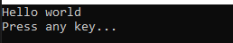
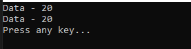
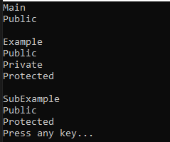
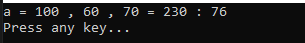

こんにちは。明月です。
この投稿はC#でStaticとアクセス修飾子、そしてカプセル化に関する説明です。
以前の投稿でインスタンス生成とStackメモリとHeapメモリに関して説明しました。
link - [C#] 11. インスタンスう生成(new)とメモリ割り当て(StackメモリとHeapメモリ)そしてヌル(null)
C#では基本的にnewのキーワードでクラスのインスタンスを生成してHeapメモリにインスタンスを割り当てしてメンバー変数や関数などを呼び出して使えます。このことがC#の最小の実行単位になります。
それならMain関数はどうでしょう。つまり、我々が実行関数と呼ばれるMain関数を呼び出すためにはクラスのインスタンスを何処で生成して割り当てするでしょう。
改めて考えると我々が関数を呼び出すためにはインスタンス生成が必要です。つまり、鶏が先か、卵が先かの話ですね。関数を呼び出すためにはインスタンスが必要、ならインスタンスを何処で生成する？
それであるキーワードはstaticです。このstaticが付けているクラス、関数、変数はプログラムが開始する時にstackメモリに登録します。
つまり、インスタンスの生成がなくても関数や変数を使えるという意味です。
using System;
namespace Example
{
// Exampleクラス
class Example
{
// インスタンス生成無しで呼び出せる関数
public static void Print()
{
// コンソールに出力
Console.WriteLine("Hello world");
}
}
class Program
{
// 実行関数
static void Main(string[] args)
{
// ExampleクラスのPrint関数を呼び出す。
Example.Print();
// 任意のキーを押してください
Console.WriteLine("Press any key...");
Console.ReadLine();
}
}
}

上の例をみればExampleクラスのインスタンスを生成せずに、Print関数を呼び出すことができます。
その中でMain関数は少し特別な規約がありますが、staticが付けられたMain関数はプロジェクトの中で必ず一つだけです。プログラム内でMain関数が二つなら開始の実行関数が分からなくなるのでです。
このstaticキーワードは関数だけではなく、変数にも付けることができます。
using System;
namespace Example
{
// Exampleクラス
class Example
{
// 変数にstatic設定
private static int data;
// Example.dataに値を設定
public void SetData(int data)
{
// staticはインスタンスと関係ないので、thisではなくクラス名で参照する。
Example.data = data;
}
// 出力関数
public void Print()
{
// コンソールに出力
Console.WriteLine("Data - " + Example.data);
}
}
class Program
{
// 실행 함수
static void Main(string[] args)
{
// 二つのインスタンス生成
Example ex1 = new Example();
Example ex2 = new Example();
// 各のインスタンスに値を設定する。
ex1.SetData(10);
ex2.SetData(20);
// コンソールに出力
ex1.Print();
ex2.Print();
// 任意のキーを押してください
Console.WriteLine("Press any key...");
Console.ReadLine();
}
}
}

上の例をみればExampleクラスのインスタンスを二つ生成して各のインスタンスのメンバー変数にデータを格納しました。でも結果はex1とex2のインスタンスのメンバー変数が同じ値が出力されます。つまり、Exampleのdataメンバー変数はインスタンスと関係ずにプログラムが実行する時に生成する変数だからです。
それならインスタンスと関係ないのでMain関数から直接にメンバー変数を参照することができると思いますが、実はprivateというアクセス修飾子により参照ができません。
アクセス修飾子は実行する位置(ステップ)でクラスや関数、変数を参照する権限(?)と思えば良いです。
| アクセス修飾子 | 内部クラス | 外部クラス | 派生クラス | プロジェクト |
|---|---|---|---|---|
| public | ○ | ○ | ○ | ○ |
| private | ○ | |||
| protected | ○ | ○ | ||
| internal | ○ | ○ | ○ | |
| protected internal | ○ | ○ |
C#には総五つのアクセス修飾子がありますがよく使うアクセス修飾子はpublic、private、protectedです。
using System;
namespace Example
{
// Exampleクラス
class Example
{
// public関数
public void CallPublic()
{
// コンソールに出力
Console.WriteLine("Public");
}
// private関数
private void CallPrivate()
{
// コンソールに出力
Console.WriteLine("Private");
}
// protected関数
protected void CallProtected()
{
// コンソールに出力
Console.WriteLine("Protected");
}
// 関数
public void Call()
{
// このステップはexインスタンス基準でExampleクラス内部です。
// publicにアクセス可能
CallPublic();
// privateにアクセス可能
CallPrivate();
// privateにアクセス可能
CallProtected();
}
}
// Exampleを継承したクラス。
class SubExample : Example
{
public void Call()
{
// このステップはexインスタンス基準でExampleクラス派生です。
// publicアクセス可能
CallPublic();
// protectedアクセス可能
CallProtected();
}
}
class Program
{
// 実行関数
static void Main(string[] args)
{
// Exampleインスタンス生成
Example ex = new Example();
// このステップはexインスタンス基準でExampleクラス外部なのでpublicだけアクセス可能です。
Console.WriteLine("Main");
ex.CallPublic();
Console.WriteLine();
Console.WriteLine("Example");
// Call関数呼び出す。
ex.Call();
Console.WriteLine();
Console.WriteLine("SubExample");
// SubExampleインスタンス生成
SubExample sub = new SubExample();
// Call関数呼び出す。
sub.Call();
// 任意のキーを押してください
Console.WriteLine("Press any key...");
Console.ReadLine();
}
}
}

Main関数ではExampleクラスのインスタンスのexにpublicで設定した関数だけ呼び出されることを確認できます。なぜならMain関数はexのインスタンスの中をみればすべて外部の位置になるからです。
Call関数ではExampleクラスの内部で認識するので、すべてのアクセス修飾子でアクセスが可能です。
SubExampleクラスのExampleクラスの派生クラスなのでpublic、protectedのアクセス修飾子だけアクセスできます。
C#になぜこのアクセス制限をするかというとオブジェクト指向プログラミング(OOP)の特性のカプセル化のためです。
OOPでクラスの意味は一つのオブジェクト(Object)ということに認識して設計します。つまり、我々が成績プログラムを作成すると思えば、クラスで人の意味のクラスを作成してその中で成績データを格納することを考えましょう。
using System;
namespace Example
{
// 成績のための人クラス
class Person
{
// 名前
private string name;
// 国語成績
private int jpn;
// 数学成績
private int mat;
// 英語成績
private int eng;
// 総点
private int tot;
// 平均
private int avg;
// コンストラクタ
public Person(string name, int kor, int mat, int eng)
{
// メンバー変数設定
this.name = name;
this.kor = kor;
this.mat = mat;
this.eng = eng;
// 総点、平均計算
Init();
}
// 初期化関数
protected void Init()
{
// 総点計算
this.tot = this.kor + this.mat + this.eng;
// 平均計算
this.avg = this.tot / 3;
}
// 出力関数
public void Print()
{
// コンソールに出力
Console.WriteLine($"{this.name} = {this.kor} , {this.mat} , {this.eng} = {this.tot} : {this.avg}");
}
}
class Program
{
// 実行関数
static void Main(string[] args)
{
// インスタンス生成
Person p = new Person("a", 100, 60, 70);
// 出力関数
p.Print();
// 任意のキーを押してください
Console.WriteLine("Press any key...");
Console.ReadLine();
}
}
}

上の例をみればPersonというクラスに国語、数学、英語の成績をコンストラクタを利用してデータを格納します。
そしてコンストラクタの中ではInit関数を呼び出して総点と平均点数を計算します。ここでクラスのメンバー変数はすべてprivateに設定します。
そして出力関数を呼び出してコンソールに成績を出力します。
もしかしてメンバー変数がすべてpublicに思えば。。
Init関数とPrint関数が意味がなくなります。ただ、Main関数で変数を値を参照して出力したらいいので。。
改めていえば、クラスの意味がなくなります。ただ、変数を集まった単位だけです。
つまり、クラスの区分をちゃんとせずに、プログラムを開発しないと結果的にソースがめちゃくちゃになる可能性も高いし、ソースの可読性(読みやすさ)が悪くなります。メンバー変数のデータを更新や参照するところが何処かのことを分からなくなります。
もちろん、OOPのコード規約を守らなくても開発ができないことではありません。
OOPの標準にはメンバー変数は必ずprivateに設定、外部で参照する関数はpublicに設定、参照しない関数はprotectedに設定することがルールです。
OOPに関してはもっと詳細的に説明が必要なので別途の投稿で説明します。
ここまでC#でStaticとアクセス修飾子、そしてカプセル化に関する説明でした。
ご不明なところや間違いところがあればコメントしてください。
- [C#] 19. 列挙型(enum)を使う方法2019/07/11 23:13:25
- [C#] 18. 構造体(Struct)、そして値型を参照するタイプ(Reference of value type)と参照型を参照するタイプ(Reference of reference type)2019/07/10 23:57:25
- [C#] 17. thisとbaseのキーワード2019/07/10 23:43:56
- [C#] 16. 継承禁止のキーワードのsealed2019/07/10 00:19:18
- [C#] 15. インタフェース(interface)2019/07/10 00:06:17
- [C#] 14. 抽象クラス(abstract)と抽象メソッド(abstract)、そして仮想関数(virtual)2019/07/08 23:04:09
- [C#] 13. クラスの継承と再定義(override)する方法、overrideとnewの差異2019/07/08 22:55:00
- [C#] 12. Staticとアクセス修飾子、そしてカプセル化2019/07/07 23:12:30
- [C#] 11. インスタンスう生成(new)とメモリ割り当て(StackメモリとHeapメモリ)そしてヌル(null)2019/07/07 22:54:13
- [C#] 10. クラスを作成する方法(コンストラクタ、デストラクタ)2019/07/06 00:53:17
- [C#] 9. 関数(Method)とオーバーロード、再帰呼び出し2019/07/06 00:38:29
- [C#] 8. 配列とリスト2019/07/05 00:12:42
- [C#] 7. 制御文2019/07/05 00:05:30
- [C#] 6. 演算子2019/07/04 00:09:43
- [C#] 5. データタイプ変換(キャスト:Cast)とコメント(Comment)2019/07/04 00:01:12
- [CentOS] Linux環境(CentOS)でCassandra(NoSQL DB)をインストールする方法(DBeaverブラウザでNoSQL使い方)2021/11/12 17:33:58
- [Design pattern] 3-3. コマンドパターン(Command pattern)2021/11/05 17:01:42
- [Window] apache-tomcatでロードバランシング(Load balancing)する方法とセッションクラスタリング（セッション共有）2021/11/05 16:58:45
- [Window] Apacheでmod_jkとmod_proxyの差異、apacheでtomcatのwebsocketのプロキシフォーワードする方法2021/11/05 16:55:05
- [PHP] Apache環境の同じホスト中でPHPとJava(Servlet)を同時に起動、運用する方法2021/11/05 16:52:04
- [C#] 61. ウィンドウフォーム(Window form)でスレッド(Thread)を使い方、クロススレッド問題解決2021/11/04 19:29:51
- [Design pattern] 3-2. 責任の連鎖パターン(Chain of responsibility pattern)2021/11/04 19:27:58
- [Design pattern] 3-1. ストラテジーパターン(Strategy pattern)2021/11/03 18:38:52
- [C#] 60. ウィンドウフォーム(Window form)のイベント設定する方法2021/11/02 21:18:08
- [Design pattern] 2-7. ファサードパターン(Facade pattern)2021/11/02 19:32:31
- [Design pattern] 2-6. プロキシパターン(Proxy pattern)2021/11/01 19:42:44
- [Design pattern] 2-5. フライウェイトパターン(Flyweight pattern)2021/10/29 19:48:27
- [C#] 59. ウィンドウフォーム(Window form)にコントロール(Control)を使い方法2021/10/29 19:45:43
- [Design pattern] 2-4. デコレーターパターン(Decorator pattern)2021/10/28 20:11:13
- [C#] 58. ウィンドウフォーム(Window form)を作成する方法、そしてウィンドウメッセージとキュー2021/10/27 20:35:44